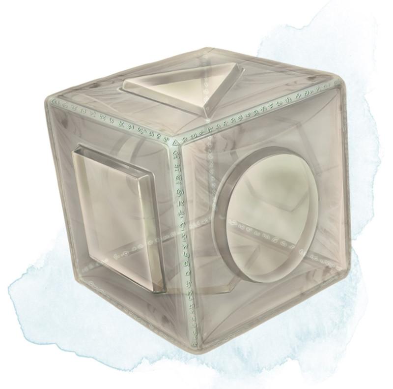

Cube de force
[ Cube of Force ]
Objet merveilleux, rare (nécessite un lien)
Ce cube fait environ 2,50 centimètres d'arête. Chaque face possède une marque distincte sur laquelle on peut appuyer. Le cube débute en possédant 36 charges, et il récupère 1d20 charges dépensées chaque jour à l'aube.
Vous pouvez utiliser une action pour appuyer sur l'une des faces du cube, tout en dépensant le nombre de charges associé à la face en question comme indiqué sur la table Faces du Cube de Force. Chaque face à son propre effet. Si le cube ne possède plus suffisamment de charges, rien ne se produit. Sinon, une barrière de force invisible apparaît, formant un cube de 4,50 mètres d'arête. La barrière est centrée sur vous, se déplace avec vous, et reste en place pendant 1 minute, jusqu'à ce que vous utilisiez une action pour appuyer sur la sixième face du cube, ou jusqu'à ce que le cube épuise toutes ses charges. Vous pouvez changer l'effet de la barrière en appuyant sur une face différente du cube et en dépensant les charges nécessaires, la durée d'apparition de la barrière est alors réinitialisée.
Si votre mouvement implique que la barrière entre en contact avec un objet solide qui ne peut pas passer au travers du cube, vous ne pouvez pas vous approcher plus de cet objet aussi longtemps que la barrière est activée.
Le cube perd des charges lorsque la barrière est ciblée par certains sorts ou entre en contact avec certains effets de sorts ou d'objets magiques, comme indiqué dans la table ci-dessous.
Vous pouvez utiliser une action pour appuyer sur l'une des faces du cube, tout en dépensant le nombre de charges associé à la face en question comme indiqué sur la table Faces du Cube de Force. Chaque face à son propre effet. Si le cube ne possède plus suffisamment de charges, rien ne se produit. Sinon, une barrière de force invisible apparaît, formant un cube de 4,50 mètres d'arête. La barrière est centrée sur vous, se déplace avec vous, et reste en place pendant 1 minute, jusqu'à ce que vous utilisiez une action pour appuyer sur la sixième face du cube, ou jusqu'à ce que le cube épuise toutes ses charges. Vous pouvez changer l'effet de la barrière en appuyant sur une face différente du cube et en dépensant les charges nécessaires, la durée d'apparition de la barrière est alors réinitialisée.
Si votre mouvement implique que la barrière entre en contact avec un objet solide qui ne peut pas passer au travers du cube, vous ne pouvez pas vous approcher plus de cet objet aussi longtemps que la barrière est activée.
| Face | Charges | Effet |
|---|---|---|
| 1 | 1 | Les gaz, vents, et brumes ne peuvent traverser la barrière. |
| 2 | 2 | Les matières non vivantes ne peuvent pas passer au travers de la barrière. Les murs, sols, et plafonds peuvent passer au travers à la discrétion du MD. |
| 3 | 3 | Les matières vivantes ne peuvent pas passer au travers de la barrière. |
| 4 | 4 | Les effets des sorts ne peuvent pas passer au travers de la barrière. |
| 5 | 5 | Rien ne peut passer au travers de la barrière. Les murs, sols, et plafonds peuvent passer au travers à la discrétion du MD. |
| 6 | 0 | La barrière est désactivée. |
Le cube perd des charges lorsque la barrière est ciblée par certains sorts ou entre en contact avec certains effets de sorts ou d'objets magiques, comme indiqué dans la table ci-dessous.
| Sorts ou Objets | Charges perdues |
|---|---|
| Désintégration | 1d12 |
| Cor de dévastation | 1d10 |
| Passe-muraille | 1d6 |
| Rayons prismatiques | 1d20 |
| Mur de feu | 1d4 |
Dungeon Master´s Guide (SRD)
